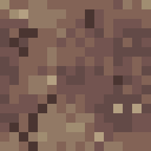

Ters Dünya
Nether kırmızı bir sise, havada uçuşan sporlara ve gökyüzünü yaran kırmızı şimşeklere bürünür.
Ters Dünya'ya hoş geldin. Nether kırmızıya bürünür, Demogorgon'lar avlanır, Vecna bekler.
Garip Şeyler MC, Stranger Things temalı bir Minecraft modu. Nether kırmızıya bürünen Ters Dünya'ya, End ise En Derin Dünya'ya dönüşür; Demogorgon, Demodog, Demobat, Vecna ve Mind Flayer peşine düşer.
Nether kırmızı bir sise, havada uçuşan sporlara ve gökyüzünü yaran kırmızı şimşeklere bürünür.
Demogorgon, Demodog ve Demobat görünümleri; her birinin farklı türleri var.
Portalların çevresini saran sarmaşıklar yaklaşanların canını emer.
End dikit renklerine bürünür; yeni üretilen End'de kuleler obsidyen yerine Ters Dünya Taşı'ndan olur.
Tek seferlik bir boss. Yenildikten sonra Nether'daki sunakla yeniden çağrılabilir.
Ender Dragon'un yerini End kulelerinden bile uzun Mind Flayer alır.
Birleştirildiğinde 001 ve 011 sürümlerine dönüşen telekinezi eldiveni.
Ters Dünya yaratıklarına 2 ya da 4 kat hasar vermeni sağlar.

Oyun içi ekran görüntüleri yakında eklenecek. Şimdilik moddaki eşyaların dokularını görebilirsin.
İpucu: MehburMC Launcher ile Fabric profilini tek tıkla kurabilir, modları Mod Toggle ile açıp kapatabilirsin. Launcher'a göz at →
İndirdiğin dosyanın benim yayınladığımla birebir aynı olduğunu kontrol etmek için dosyanın bulunduğu klasörde PowerShell'i açıp şu komutu çalıştır:
Get-FileHash .\garipseylermc-0.1.0.jar -Algorithm SHA256Çıkan SHA-256 değeri bununla aynı olmalı:
2d5c16872cc053b8a0f0a810126318c52ae992f60b8112e282c3df7b6084467f